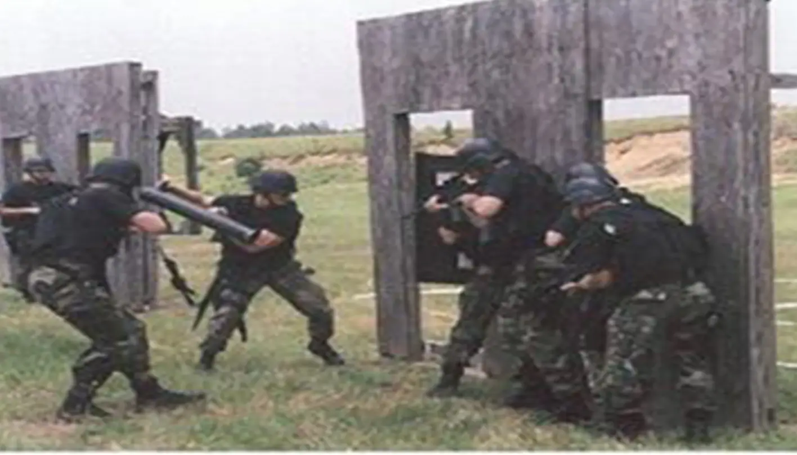

A Warrior's Ethos, A Defender's Commitment
Jeff Lotter's U.S. Army Military Police Service: Forging Strength for Your Defense
Sergeant (E-5) | Paratrooper
Request a ConsultationU.S. Army Military Police (1996-2002)
Jeff Lotter's dedication to service began long before he became an attorney. From 1996 to 2002, he proudly served in the U.S. Army as a Military Police (MP) officer, achieving the rank of Sergeant (E-5) before his honorable discharge. This period was marked by rigorous training, challenging deployments, and the development of a steadfast commitment to duty and justice—qualities he brings to every client's case.
Key Assignments & Deployments
- 108th Military Police Company (Airborne, Fort Bragg, NC): Deployed to Bosnia for 12 months as part of a "double stacked" unit. Served as a crew gunner conducting vital main supply route patrols and convoy escorts in a post-conflict environment.
- 42nd Military Police Detachment (Special Reaction Team - SRT, Fort Bragg, NC): Selected for and served on a specialized unit responsible for high-risk situations, similar to a civilian SWAT team.
- 65th Military Police Company (Airborne, Fort Bragg, NC): Deployed to Kosovo for 9 months, contributing to peacekeeping and stability operations.
- Recalled to Active Duty Post-9/11: After his initial ETS (Expiration Term of Service) in early 2001, Jeff was recalled to active duty following the September 11th attacks, demonstrating his unwavering commitment.
- Ft. Knox Military Police Unit (Fort Knox, KY): Upon recall, served at Ft. Knox performing garrison police work and was again selected for the Special Response Team (SRT), further honing his tactical and crisis-response skills.

Specialized Training & Skills
Jeff's military career was distinguished by continuous learning and mastery of critical skills:
- Airborne School (Fort Benning, GA): Earned his parachutist badge, signifying his capability to deploy into any environment.
- Air Assault School (Fort Campbell, KY): Mastered helicopter insertion and extraction techniques, further enhancing rapid deployment capabilities.
- Military Police Training: Comprehensive training in law enforcement procedures, investigations, and security operations.
- Special Reaction Team (SRT) Training: Advanced tactical training for high-risk warrant service, hostage rescue, and dignitary protection.
- Leadership: Progressed to the rank of Sergeant (E-5), responsible for the training, welfare, and performance of subordinate soldiers.
- Operating Under Extreme Stress: Combat deployments and SRT duties instilled an exceptional ability to remain calm, think clearly, and execute decisively under intense pressure.

The Veteran's Advantage: How Military Service Benefits Your Defense
Jeff Lotter's military background isn't just a part of his history; it's a cornerstone of his legal practice. The "warrior ethos" developed through years of demanding service translates directly into a tenacious and disciplined approach to defending your rights:
- Unwavering Discipline & Attention to Detail: Military Police work, especially in deployed environments and on SRTs, demands meticulous attention to detail and adherence to procedure. Jeff applies this same rigor to dissecting evidence, police reports, and every facet of your case.
- Composure Under Pressure: Facing high-stakes legal battles can be stressful. Jeff's experience operating effectively in combat zones and high-risk tactical situations means he remains focused and strategic, even when the pressure is immense.
- Strategic Thinking & Problem Solving: Military operations require strategic planning and adaptability. Jeff approaches legal challenges with a tactical mindset, identifying weaknesses in the prosecution's case and developing innovative defense strategies.
- A Fighter's Mentality: As a veteran and former paratrooper, Jeff is not one to back down from a challenge. He is prepared to fight vigorously for your rights and secure the best possible outcome.
- Commitment to the Mission: In the military, the mission is paramount. For Jeff, his client's best interest is the mission. He is dedicated to serving you with the same level of commitment and integrity he demonstrated in service to his country.
When you choose Lotter Law, you're not just hiring an attorney; you're gaining an advocate forged by years of distinguished military service, ready to stand and fight for you.